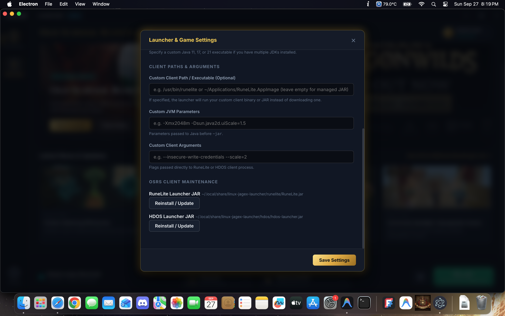

A 1:1 replica of the official Jagex Launcher for Linux. Play RuneScape 3 natively with official ELF binaries and Old School RuneScape with RuneLite, HDOS, or the official client — powered by direct Jagex Account OAuth 2.0 PKCE authentication.

Crafted to precisely match the Windows and macOS official launcher. Features live hero event artwork, official Jagex maintenance PSA feeds, news banners, and bottom dock controls.
Downloads and unpacks Jagex's official native x86_64 Linux client directly into your user space without requiring root permissions. 100% native CPU performance and Vulkan/OpenGL graphics.
Integrated support for RuneLite, HDOS, and the Official Client. Automatically preserves your personal ~/.runelite settings, plugins, and tile markers.
Authenticates directly with account.jagex.com using standard OAuth 2.0 PKCE. Built-in interactive browser handles Cloudflare verification and 2-Factor Authentication seamlessly.
Enable "Close on Launch" in settings to automatically shut down the launcher after your game starts, freeing 100% of the launcher's memory for maximum gaming performance.
No external tracker, no intermediate servers, and no analytics. Your tokens and credentials are kept strictly in local user storage (~/.config/linux-jagex-launcher/).
The community standard open-source client. Automatically detected on your system or downloaded directly from GitHub. Preserves all external plugins, screenshots, and bank tags.
Breathtaking 2008-era HD graphics engine built on OpenGL/Vulkan with silky-smooth frame rates. Automatically downloaded, verified, and launched with your Jagex character session.
The official C++/Java Steam and desktop OSRS client with modern C++ rendering enhancements and native Jagex account single sign-on.
Works out-of-the-box on almost all modern 64-bit Linux distributions:
Install the native Debian package for system menu integration and automatic desktop icons:
Run via AppImage or extract into your user bin directory. Perfect for Arch and the Steam Deck:
Compatible with Fedora Workstation 38+: install FUSE if using AppImage or run directly:
Clone and build from scratch in under two minutes:
JX_SESSION_ID, JX_CHARACTER_ID) directly to official, verified game binaries (RuneLite, HDOS, or native RuneScape).
~/.runelite and allowing web links in-game to open in your default browser.
.deb package into your local user data directory (~/.local/share/linux-jagex-launcher/client/) using userspace archive utilities (tar / ar), allowing it to install and update without ever requesting sudo or root permissions.
gamemoderun) and MangoHud can be toggled on/off in the Launcher Settings modal for high-performance CPU governor scheduling and real-time performance metrics.